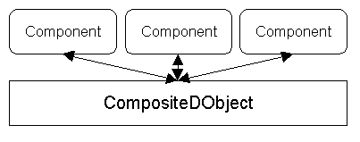

World Object Support
This page is being written and maintained by Arturo.
Last updated:
[98/07/15] Arturo - Major revision, finished initial draft, there
are several comments below, addressed Bill's comments.
[98/07/09] Arturo - Added neighbor mapping as well as detailed description
of the issues around a World Object's 'public' interface.
Introduction
Much of EC's work has revolved around building distributed social enviroments
called 'worlds', these worlds use a familiar set of concepts to
convey location (regions), people (avatars) and things (props). These constructs
are what we call 'world objects' or una. World objects need a basic
set of properties that allow them to exist in world. Those properties are
implemented through specific objects that are then aggregated to make the
world object instance.
In previous versions of MicroCosm the basic world object support was
provided by a language called Pluribus [find and link Pluribus documentation
here]. Plurbus provided both distribution support and composition support,
this turned out to be a difficult combination. For the next version of
Cosm the core distribution support is given by the DObjects
layer, allowing us to separate the support for compositing, creating,
saving, maintaining and destroying the world objects. These classes are
what we call World Object Support.
[ABS - Fixed 98/07/09 finished paragraph]
One of the advantages that the DObject infrastructure gives us is the
ability to make singleton distributed objects. In Pluribus you had to define
all of the composition infrastructure to support a single ingredient Unum.
This document will not discuss singleton DObjects, instead it will focus
on the composition tools needed for making world objects.
This document does not yet include references to any specific world
objects or their components.
Related Documents
Requirements
Support is needed for:
-
Creation, management and destruction.
-
Aggregation of objects and message handling.
-
Identity (for some una).
-
Serialization for persistence and over the wire instantiation.
-
Easy structure reuse.
-
Capability exchange between una.
-
Interest/Notification support.
The DObjects infrastructure will provide the tools for maintaining consistency,
partition notification and object distribution.
Architecture
The goal for this subsystem is to provide support for creating, maintaining,
saving and destroying composite distributed objects. The architecture will
be described in the following order:
-
Basic structure of a CompositeDObject (the objects formerly known as una).
-
Notes on capabilities, identity and the DGroup's mediating role.
-
Presenting a public interface.
-
Creation and destruction.
-
State for initialization, persistence and distribution.
-
Internal messaging logistics.
-
Testing and tracing.
[ABS 98/06/16 Issue: Does the renaming seem like a sensible idea?
- Resolved, the new mappings have been agreed on]
Recently we renamed several of our constructs following Robj's NameTheThingForWhatItActuallyDoes
(tm). For those that love (and hate) the old names here's a simple guide
to keep one's head straight:
Unum -> CompositeDObject
Ingredient -> Component (extends BaseComponent)
Presence -> Local instance of the CompositeDObject
State Bundle -> State Bundle (extends BaseState)
All of the other Pluribus concepts are covered by functionality in the
support classes, at the end of the document there will be a comprehensive
mapping.
Basic structure of a CompositeDObject (the objects formerly known as una)
World objects are made of an aggregation of object instances, to be able
to talk about them them we need to first establish a set of definitions.
Initially these definitions will focus on the composition aspect
CompositeDObject
Abstractly it is the object formerly known as an Unum, concretely is the
base object that provides the basic support for the components. It is the
source for that DObject's identity as well as leveraging the DObjects infrastructure
to provide the distribution behaviour. This class provides the base for
creation, destruction and maintenance of a world object.
Component
The objects formerly known as ingredients, components provide the actual
behavior code for the World Object, they depend on a set of services like
identity provided by the CompositeDObject instance that they belong to.

First pass at the anatomy of a world object
You create a CompositeDObject by making an instance of that class and then
providing it a list the components. The list of components needs to be
indexed so that you are able refer to that specific component.
Role names
A Role name is the string used to identify a component in a CompositeDObject.
It is used for construction, indexing, plumbing, and reference. To make
the CompositeDObject structure and construction more typesafe a Role name
will imply a type and specifically either an interface or a specific class
definition, as a matter of fact initially the role names will be the
type name. Although the moment that we need two components of the same
type a new role name can be defined to disambiguate.
Role name => Interface or Class name => Specific instance
Examples:
|
Role Name
|
Type
|
Instance
|
| "ec.cosm.Container" |
ec.cosm.Container |
new ec.cosm.BasicContainer(); |
| "ec.cosm.RegionContainer" |
ec.cosm.Container |
new ec.cosm.BasicContainer(); |
You can extrapolate from there, the basic idea is to provide an intuitive
indexing system that allows us to do type checking on construction.
[98/07/13 ABS: Added state bundle description, added state bundle
parameter to init below]
State Bundles
One very useful distinction made by Pluribus was the separation of a Component
from from an object called the State Bundle. state bundles are struct-like
objects that are used to hold the serializable state of a Component, all
of the instance variables in a state bundle need to be serializable. Bundles
serve two related purposes:
-
Initialization both from first creation as well as deserialization.
-
Serialization for persistence and encoding for creation of new presences.
The principle behind separating a component's implementation from its
serializable state is that it minimizes the commitment on what needs to
be serialized, this reduces the set of objects that need to deal with upgrade
and version interoperability.
State bundles have been historically created to match Role Name rather
than actual implementation, although the actual constraint is that a component
that can fill a role should be able to be initialized with the corresponding
state bundle.
Example:
class DescriptionState extends BaseState {
public String myDescription;
}
In the case where a role name maps directly to an interface
interface Description {
void init(DescriptionState state);
String getDescription();
}
Any Component that fulfulls the "ec.cosm.Description" role would have
to implement these interfaces.
[98/07/13 ABS Issue: Need to agree on a convention for naming the
state bundles, usually the state bundle is associated with a role name
rather than an actual ingredient implementation, both ought to be supported.
FooState is the clearest choice but is it too punnable?]
Example CompositeDObject
Here is some 'very pseudo' code of how a CompositeDObject would be constructed,
more of the details will be filled out later:
CompositeDObject rock = new CompositeDObject();
rock.addComponent("ec.cosm.Containable", new ec.cosm.BasicContainable());
rock.addComponent("ec.cosm.Mineral", new ec.cosm.minerals.Rock());
rock.getComponent("ec.cosm.Mineral").init(mineralState);
Structure vs. Implementation vs. Instance
In Pluribus we had the distinction between structure, implementation and
instance.
-
The structure defined the set of components, their interfaces and labelled
them with roles.
-
The implementation chose a specific set of classes to fill those roles.
-
The structure can be extended by adding roles. Implementation can be extended
by defining a different class to fill a role.
-
Then you make instances of the implementation.
The goal was to provide a way of defining reusable configurable structures,
but capturing all of those degrees of freedom in a language turned out
to be difficult. Now that we can define the structures programatically
can keep the freedom while simplifying the interfaces. Consider the following
simplification of the rules above.
-
A structure can be defined with a default implementation, this means a
set of component roles and classes to fill them.
-
You can change a structure by changing the a role's default implementation
and/or adding a new role.
-
You make instances of the structure.
The rock example above illustrates how you would construct a CompositeDObject
instance by hand. In practice we will need to define a rock (actually called
prop) structure that we can reuse as we build more world objects. There
are two ways that we can define structures for reuse:
Textually
The structure is defined on a text file with a well defined format, something
like:
begin structure Rock
role ec.cosm.Containable ec.cosm.BasicContainable
role ec.cosm.Mineral ec.cosm.minerals.Rock
end structure
begin strucure LavaRock extends Rock
role ec.cosm.Mineral ec.cosm.minerals.Lava
end structure
(ABS: Ack!, not a another language!!!!!! | 98/07/08 being more objective
its not another language, it is just a simple descriptive structure similar
to realmtext but for W.O.)
The text file would then be parsed by a factory class that would generate
the structures that would then be used to instantiate the Rock instances.
The advantages of this approach are:
-
No class bloat.
-
No need to recompile for structure tweaks.
-
Tool/user friendly.
The disadvantages are:
-
Treading close to language territory.
-
The need to define and maintain and use a namespace for the structures.
-
No static information or checking.
Statically defined structures
The structure is defined in code similar to Plubar, the follwing example
is simplified:
class CompositeDOStructure {
static CompositeDObject create() {
return new CompositeDObject();
}
}
class Rock extends CompositeDOStructure {
static CompositeDObject create() {
CompositeDObject dobj = super.create();
dobj.addComponent("ec.cosm.Containable", new
ec.cosm.BasicContainable());
dobj.addComponent("ec.cosm.Mineral", new ec.cosm.minerals.Rock());
return dobj;
}
}
class Lava extends Rock {
static CompositeDObject create() {
CompositeDObject dobj = super.create();
dobj.replaceComponent("ec.cosm.Mineral", new
ec.cosm.minerals.Lava());
return dobj;
}
}
The add/replaceComponent methods could be collapsed, the choice in separating
them is to get failure information if you're trying to replace the implementation
for a component role that has not yet been defined.
The advantages of this approach are:
-
Structure namespace is the class namespace.
-
Extension/modification by inheritance and coding conventions.
-
Some static checking.
The disadvantages are:
-
Class bloat, one class per structure, no instance bloat.
-
Need to recompile.
-
Less friendly to tools/users.
Note that due to their nature both approaches are not mutually exclusive,
the textual approach requires more up front implementation for the factory
class and the programmatic approach can coexist with the textual one.
[98/06/17 ABS Issue: Which approach do you guys think is most appropiate
for v1?, personally I bias towards the programmatic one because it requires
less mechanism to be built]
[98/07/14 ABS Rewrote neighbor section for clarity]
Neighbors or lack of thereof
The 'neighbor' keyword in Pluribus was used so that an ingredient could
refer to one another, the reason for it being a language construct rather
than a function was twofold:
-
To prohibit malicious ingredients from getting their hands on closely held
ingredients, the assignments of who could refer to which ingredieng were
made at the structural level.
-
To disambiguate assignment when there were multiple ingredients of the
same kind.
Both of these never turned out to be issues, so the proposed simplifed
mechanism is that the CompositeDObject class provides a method that can
be called from its Components to look up another component by role name
e.g.
myCompositeDObject.getNeighbor("ec.cosm.Mineral");
The returned object can then be stored in an instance variable or used
transiently, if there is a need to disambiguate you can tell a component,
as part of its intialization state, which role to look up the corresponding
neighbor under.
Notes on capabilities, identity and the Session's mediating role.
So far I've avoided discussing the notion of messaging plumbing,
specifically routers available in Pluribus. The router was a compiler generated
class that presented a single interface while internally keeping a data
structure to determine who to deliver the messages to. In Pluribus there
were two types of router:
-
The 'Unum Router' was the location independent public interface that the
Unum presented to other objects.
-
The 'Presence router' enforced a security boundary between the host and
its clients, it will be discussed later with the distribution issues.
Routers were troublesome due to their class bloat, interface bloat as well
as constraining the namespace of the methods that you could invoke.
[98/06/17] Arturo - Added second section from here on.
The routers provided the following important pieces of functionality:
-
The ability for a CompositeDObject to present a single object as the means
to send messages to its components while hiding the internal structure.
-
The ability to have that interface be a programmer defined subset of the
specific Component's full interface, what we've traditionally called 'facets'.
-
Provided a good revocation boundary, when a presence was no longer relevant
the host would revoke the rights given to it.
-
Provided a good notification boundary, when a presence got disconnected
the corresponding UnumRouter would notify anybody who registered an interest.
The DObjects work strengthens the revocation and notification patterns
by leveraging the Session's role. You get a presence of a CompositeDObject
through joining a Session and it is the Sesson that tracks membership changes
and partitions. In DObjects you use the Session to construct the capabilities
used by presences to interact with each other, this allows the Session
to revoke and notify when there is an applicable membership change. Another
important addition is that the notion of the object's identity is integral
to the construction of the capabilities s.t. you can make assertions about
it later.
So the requirements for the capabilities exchanged between CompositeDObjects
are:
-
Means for a CompositeDObject to provide a single object representing a
set of capabilities over it regardless of its internal structure.
-
Such capabilites are created with the Session's help s.t. it may revoke
and notify where appropriate.
-
A CompositeDObject will have a single identity, any capabilites provided
by its Components need to be constructed in such a way that you can assert
about their common source of identity later.
CapabilityGroup
This was one of the most useful classes on the latter days of Cosm, introduced
by Trev for the identity work, the basic idea is that of a wrapper class
over a hashtable of capabilities indexed by a string. The indexing of the
table will be patterned against the indexing for the Components where role
name implies type. In most cases the role name will be the string that
represents that type, but if there is ambiguity the programmer can define
a new role name that maps to a common type.
The jCapabilityGroup class in Cosm had the following functionality:
-
Type checking of the capability added against the string used to index
it.
-
Construction of the facet that subsets the interface of the object passed
in i.e. you would call addCapability on the group with the type you wanted
it to be and the pointer to the actual ingredient, the jCapabilityGroup
class would construct the facet (a StoneCast) that was retrieved whenever
the getCapability method was called.
To meet the requirements for inter-DObjects capabilities the following
mechanism needs to be added:
-
Construction mediated by the session.
-
Map a capability group, and all the capabilities extracted from it to a
single DObject identity, provide interfaces for checking 'belongs' against
an identity.
-
Atomic revocation of the group and all capabilities within it. The session
will use this to revoke on membership change.
This is the CapabilityGroup class.
Examples (pseudo code):
interface AddDObject {
void add(ec.dom.DObject dobj);
}
CapabilityGroup group = mySessionFacet.createCapabilityGroup();
group.addCapability("ec.habitats.AddDObject", containmentComponent);
E.send(group.getCapability("ec.habitats.AddObject"), "add", rock);
This is equivalent to what we had to do before:
(ec.habitats.AddObject)unumRouter <- add(rock);
Although the case could be made for the following shorthand:
E.send(group, "add", rock);
Benefits:
-
Allows for easy delegation of privileges, the person that receives the
group can extract a capability and pass it on.
-
Single CompositeDObject identity that is associated with the group and
single capabilities.
-
Clean mechanism/boundaries for revocation on membership changes.
-
Flexible unambiguous namespace. Before if you had two methods called 'setProperty'
there was no way to disambiguate them so we need means to be able to say
'ec.habitats.AvatarBody', "setProperty" v.s. 'ec.habitats.Containment'
"setProperty".
-
It will allow for a single implementation/interface for dealing with partition
and revocation.
Issues:
-
Should you be able to construct a CapabilityGroup that exists regardless
of the session and that can only be revoked by the issuer?
-
The construction of the object formerly known as StoneCast.
-
Do we add interface sugar to allow for default mappings of methods?
Pushing and pulling and other forms of exchange
DObjects as currently formulated manages the granting of capabilities in
a 'pull' way modelled after Trev's capability P.O. Box, I've not yet done
a mapping between that and the CompositeDObject (who handles the requests?),
nevertheless from what we've done so far the 'push' model of passing capabilites
works well. For example, in ye olde Containership protocol the Containable
gave a set of rights to its future Container as part of the 'addUnum' message.
(I need to discuss this with MarkM to clarify the distinction)
World Object 'Public' interface
In Pluribus as part of an Unum's definition you defined it's public interface,
and how that interface mapped to the ingredients, the ideas behind the
Unum Interface were:
-
Single location independent interface for an unum, the idea was to enable
dialog between world objects regardless of network topology/location.
-
Being able to choose a subset of the Components/Ingredients' interface
to present to other world objects.
This interface was implemented by the UnumRouter, unfortunately as formulated
it came with the following disadvantages:
-
The unum had just One public interface, supporting different kinds of relationships
between world objects involved working around the UnumRouter.
-
Interface explosion because we needed interfaces for all the combinations
of other interfaces.
-
Awkward expression of the mappings in the language, in particular when
we wanted to factor in reuse.
-
Poor delegation support, if you wanted to give somebody else a subset of
the rights you had to instantiate an object that implemented the subset
interface and have that object forward the requests to the UnumRouter.
It turned out that we needed more fine grained exchange of capabilities
depending on the relationship between the objects. We initially did this
by adding objects on top of the UnumRouter but the mechanism was expensive
in implementation and runtime, this was the requirement that prompted facets
as revokable objects that pointed directly to the ingredients.
The UnumRouter ended up serving a single important function, it was
used to declare the set of rights exchanged between world objects in a
containment relationship.
Taking away the restriction of having one true public interface gives
more flexibility but there is still the requirement of declaring the set
or capabilities given in containment. The mechanism for distributing this
special CapabilityGroup will leverage the DObject notification methods:
DObject.activated, deactivated, otherActivated, otherDeactivated all have
a parameter of type SessionNotifyInfo. This is a dummy class right
now (no instance variables at all...and infact null is always passed in
right now). This object will include the CapabilityGroup presented
to the Region/Container at initial entry. This leaves us with one problem,
how do we declare this interface?
Choosing a 'rights given with containment' interface [Issue]
There are 3 possible ways of declaring what capabilities we want a world
object to present in a containment relationship:
Declare the interface externally
Similar to what Pluribus Lite does, as part of the definition of the
structure you declare which role handles which interface.
begin structure Rock
role ec.cosm.Describe ec.cosm.BaseDescribe handles ec.cosm.Describe
end structure
Advantages:
-
Data driven, no class/code cost.
Disadvantages:
-
Awkward definition.
-
Unpredictable reuse properties, as Scott says in his signature, before
reuse we need to get use.
CapabilityGroupMaker component
Create an Component who's job it is to create the right CapabilityGroup,
this object would then be subclassed to refine, change or extend behavior.
Example pseudo code:
class PropCapabilityGroupMaker extends BaseComponent {
public CapabilityGroup makeDefaultGroup() {
CapabilityGroup = mySessionFacet.makeCapabilityGroup();
capabilityGroup.put("ec.habitat.Describe",
getNeighbor("ec.habitat.Describe"));
}
}
Advantages:
Disadvantages:
Manage from the Component init method
Put the knowledge in the components themselves, then use an initialization
parameter to indicate wheter that Component's 'public' interface is put
in the CapabilityGroup.
class BaseDescribe extends BaseComponent {
public void init(boolean provideCapability, String underRoleName)
{
if (provideCapability) {
// getCapabilityGroup is provided
by BaseComponent
getCapabilityGroup.put(underRoleName,
this);
}
}
}
Advantages:
Disadvantages:
-
Depending on implementation this is restricted to a single interface per
object. It could be generalized to do more, but if we don't need it we
will not do it beforehand.
Creation and destruction of instances
Starting from the rock defined earlier:
class Rock extends CompositeDOStructure {
static CompositeDObject create() {
CompositeDObject dobj = super.create();
dobj.addComponent("ec.cosm.Containable", new
ec.cosm.BasicContainable());
dobj.addComponent("ec.cosm.Mineral", new ec.cosm.minerals.Rock());
return dobj;
}
}
The Components for this object will be initialized empty instances to
be initialized by the init call described below.
The CompositeDObject base class will provide the support used for creation
modification and destruction of a world object. CompositeDObject instances
will be closely held and available only to the instantiating object and
its components. For example the Catalog/Inventory system will create a
world object and keep the reference to the CompositeDObject returned from
'create' operation so that it can later destroy and do other object management.
Initializing with bundles
Here is some verbose code of how the intialization mechanism could work:
class CompositeDObject {
private HashTable myComponents;
public void init(Hashtable bundles) {
Enumeration roles = myComponents.keys();
while(roles.hasMoreElements()){
String role = (String)roles.nextElement();
Component c = (Component)myComponents.get(role);
c.init(bundles.get(role);
}
}
}
All of the components need to implement the 'init' method. The reason
for using these generically named init methods rather than constructors
is to allow us to build generic creation/intialization code. One of the
most unpleasant artifacts of OldoCosm was the MCUnumFactory which needed
a creation method per CDO implementation, this was very difficult to set
up and maintain.
Note that the example above is very object happy, the actual mechanism
will be less so.
A simple serialization story
The minimal amount of information that needs to be saved about a world
object to preserve it is:
-
Given a namespace, the name and version of the world object structure.
(i.e. Rock v1)
-
The role/state bundle pairs used for intialization.
Note that the role/bundle pairs do not imply anything about the internal
structure of the world object, just that it can be initialized by it. An
evolution of that structure that has less or more ingredients would just
need to do with the bundles by their role.
CompositeDObject will support two different serialization methods one
for persistence and one for encoding (need better name for over the
wire distribution) when and which serialization gets called is determined
by the DObjects infrastructure. Traditionally the components have managed
the subset of their state that is sent to client presences, and all of
the client presences maintain the same state.
The Component objects need to implement methods for returning their
persistent and client state.
For encode/decode as well as persistence deserialization the name of
the structure is looked up an instance gets created and it then initialized
with the set of roles/bundles.
[98/07/14 ABS Issue: Previously the actual UnumRouter class the moral
parent of the CompositeDObject class was separate from the SoulState class
which only stored the serializable information for that unum, I believe
that given the right constraints these could be collapsed on the CompositeDObject
class]
Note that the nature of the information saved, particularly the struct
nature of the state bundles is very amenable to textual representation.
The issues in textual serialization are the inter-world object references
and whether identity needs to be preserved or not.
Testing and tracing
All world objects will need to support a basic set of fuctionality exposed
through verbs, all of these verbs will need operation return indications.
See Brian's CLI and World Object
testing requirements.
<Insert link to brian's updated doohickey>
Off the shelf alternatives
Need to examine Voyager and other distributed object doodads.
Other Design Objectives, Constraints and Assumptions
Lists any special objectives and assumptions of the code e.g. reusability,
thread safety, security, performance, use of resources, compatibility with
existing code etc. This section gives important context for reviewers
Implementation
This section should give details of the major classes and interfaces.
Which packages on our tree does this subsystem cover?
For example ec4/javasrc/ec/...
Implementation overview
In many cases, this section can link to JavaDoc output from actual Java
classes and interfaces. This saves writing documentation twice (the designers
will have to JavaDoc their interfaces anyway). The JavaDoc should be linked
into the design document. Chip's JavaDoc
style guidelines explain how to use JavaDoc effectively.
Exception handling
For any clients of the subsystem this section discusses in general the
exceptions that this subsystem can throw in usage, this section should
also link to the corresponding JavaDoc.
Examples
Are there examples?
Performance
Lists performance issues, targets, considerations and tradeoffs for
this subsystem. These issues can include: class bloat, runtime resource
consumption and usage/invocation cost. Here are some questions to consider:
-
Is this code doing the minimum possible for TheProduct?
-
Could this code be native?
-
Should this code be native?
-
What do you see as the most likely performance bottlenecks in this code?
-
Is there another way to write them so they're not bottlenecks?
Testing Strategy and Debugging
Describes the testing strategy for this subsystem. List if it is possible
to stress test this code outside TheProduct. Lists the testing API, any
tests and debugging utilities which are to be developed to help test the
design (e.g. test classes, trace categories, etc.).
Interactions and dependencies with other subsystems
Describes the testing strategy for this subsystem. Lists any tests and
debugging utilities which are to be developed to help test the design (e.g.
test classes, trace categories, etc.)
Design Issues
Resolved Issues
History of issues raised and resolved during initial design, or during
design inspections. Can also include alternative designs, with the reasons
why they were rejected
Open Issues
[1998/07/14: ABS] Added Object Frugality issue.
-
The facetless CompositeDObject & Object Frugality
This is a consequence of Arturo's current scaling nightmares, historically
there has been overhead of a couple of facet instances per Unum (4 immediately
come to mind), if you multiplicate this against several thousand una suddenly
you face youself with a whole lotta objects. One of the ideas I've been
entertaining to make the hosts more scaleable is that since we control
the messaging code to see if we could implement the benefits of facets
through a very efficient dispatch table.
In general I wonder how much of this can be done to CapabilityGroups
initializing state bundles and other structural objects, after all an object
saved is an object earned. Although, as always, Cost/Benefit must be appraised
for such things (the dimensions being Clarity of concepts and ease of coding
vs. Instance/Class/String/Table explosion).
There are a number of strategies I am currently thinking of to reduce
the number of objects used with roles/bundles, etc.